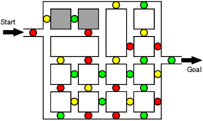

| Hint for the Dot Maze: |

|
Most of the tricky part of this maze happens at the beginning. Notice the two blocks that are shaded in this diagram. You must begin the maze by repeatedly looping around those two blocks until you can travel through the yellow dot at the upper- |